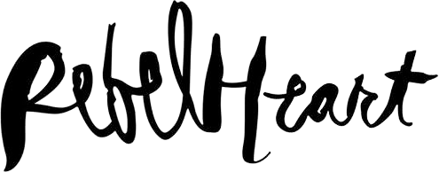
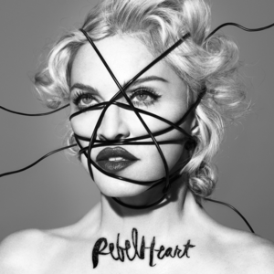
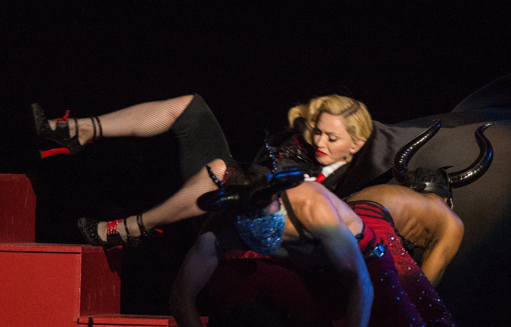
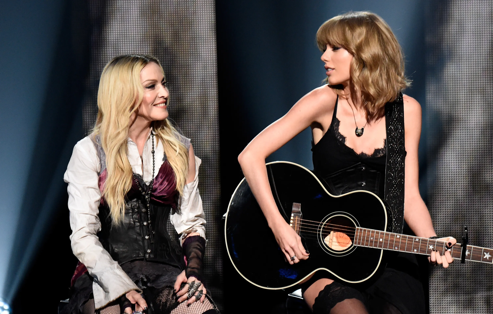
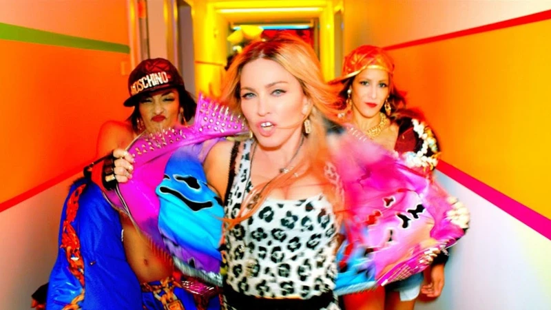

Rebel Heart es el decimotercer álbum de estudio de Madonna. Lanzado a la venta en 2015, continúa con la mala racha de lanzamientos mediocres que la Reina del Pop empezó con Hard Candy en 2008 y que siguió con MDNA en 2012. Este proyecto abarca una extensa gama de sonidos que estaban de moda a mitades de los 2010's debido a que fue filtrado en diciembre de 2014 y tuvo que ser retrabajado con varios productores como Avicii, Diplo, Kanye West, SOPHIE, Mike Dean, Charlie Heat y Travis Scott. Esta excesiva cantidad de productores, sonidos y su falta de cohesión fue uno de los principales problemas que la crítica tuvo con este álbum. Comercialmente, el álbum fue un fracaso total al ser el primer álbum de Madonna cuyo sencillo líder no ingresó al Billboard Hot 100. Además, las filtraciones en diciembre de 2014 afectaron gravemente el éxito de Rebel Heart ya que el álbum no saldría hasta marzo de 2015. Lo más cercano a un hit que tendría este álbum sería la canción "Bitch I'm Madonna", su tercera colaboración con Nicki Minaj. El tema lograría llegar al puesto #88 del Billboard Hot 100 debido a su video musical saturado con cameos de divas del pop del momento. El álbum tuvo una campaña promocional muy extraña en la que Madonna subía fotos de personajes históricos con vendas en la cara como Martin Luther King, El Grinch, Marilyn Monroe, Nelson Mandela, los Angry Birds y más. Rompió la racha de álbumes #1 que tenía desde Music ya que debutó en el puesto de #2 del Billboard 200 de E.E.U.U.

Caída de Madonna en los BRITs del 2015 mientras cantaba "Living For Love".

Madonna interpretando la canción "Ghosttown" junto a Taylor Swift en los iHeart Radio Music Awards de 2015.

Madonna en el video musical de "Bitch I'm Madonna" en el que hay cameos de Nicki Minaj, Katy Perry, Beyoncé, Miley Cyrus, Kanye West y Rita Ora.